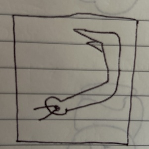

In a dock / app launcher, next to neutral icons
Next to tether's icon

Your sketch: ring + tied rope bottom-left, shank across and up the right side, hooking over the top into a sharp point with a barb. White hook on a light green tile. Three levels of jagged, same pose. Pick a green below; it changes every tile.

All straight cuts and hard corners, saw-tooth barb. The most "jagged", like a forged or cut-metal hook.
The smooth bend from your sketch, but a knife point and one deep barb. Closest to the drawing.
Your hook plus a second, shorter prong behind it, so it reads as a grappling hook rather than a fishing hook.